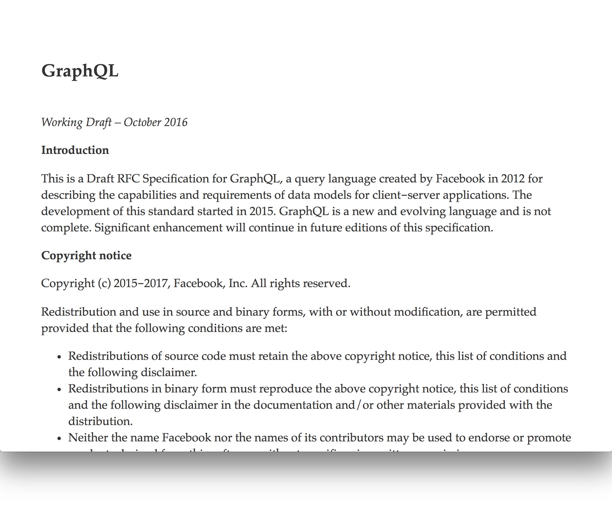
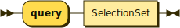
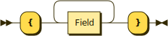
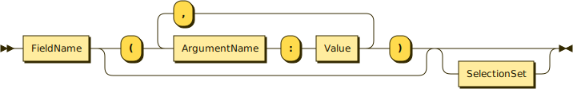

class: center, middle # GraphQL in OCaml --- class: center, middle Andreas Garnæs<br/> `@andreas` (github)<br/> `@cuvius` (twitter) --- # Agenda GraphQL ... 1. Spec, language and type system 1. Client 1. Server --- class: middle, center # GraphQL --- class: center  --- class: two-column # The GraphQL Spec <div class="left-col center"> <img src='https://graphviz.glitch.me/graphviz?layout=dot&format=svg&mode=download&graph=digraph { root [style=invis, shape=point]; query [shape=box, label=Query]; repository [shape=box, label=Repository]; description [label=String]; diskUsage [label=Int]; root -> query; query -> repository [label="repository(owner: String!, name: String!)"]; repository -> description [label="description"]; repository -> diskUsage [label="diskUsage"]; }' /> </div> <div class="right-col"> -- - Query Language -- - Type System -- - Introspection -- - Validation -- - Execution -- - Response -- - ~~Transport~~ -- - ~~Serialization~~ --- # Why GraphQL - Flexible - Typed - Introspection --- class: two-column # Language <span style="font-size: 14pt">(simplified)</span> <div class="left-col"> <h4>Query</h4>  <h4>SelectionSet</h4>  <h4>Field</h4>  </div> -- ``` query { repository(owner: "mirage", name: "mirage") { description diskUsage } } ``` --- class: two-column # Example <div class="left-col center"> <img src='https://graphviz.glitch.me/graphviz?layout=dot&format=svg&mode=download&graph=digraph { root [style=invis, shape=point]; query [shape=box, label=Query]; repository [shape=box, label=Repository]; description [label=String]; diskUsage [label=Int]; root -> query; query -> repository [label="repository(owner: String!, name: String!)"]; repository -> description [label="description"]; repository -> diskUsage [label="diskUsage"]; }' /> </div> -- ``` schema { query: Query } type Query { repository(owner: String!, name: String!): Repository } type Repository { description: String diskUsage: Int } ``` --- class: two-column # Example ```javascript // Query query { repository(owner: "mirage", name: "mirage") { description diskUsage } } ``` -- ```javascript // Result { "data": { "repository": { "description": "MirageOS is a library...", "diskUsage": 26391 } } } ``` --- class: two-column # Type System Node types: - Scalar - Enum - Object - NonNullable - List --- class: two-column # Scalar <div class="left-col center"> <img src='https://graphviz.glitch.me/graphviz?layout=dot&format=svg&mode=download&graph=digraph { root [style=invis, shape=point]; query [shape=box, label=Query]; repository [shape=box, label=Repository]; description [label=String]; diskUsage [label=Int]; root -> query; query -> repository [label="repository(owner: String!, name: String!)"]; repository -> description [label="description"]; repository -> diskUsage [label="diskUsage"]; }' /> </div> -- <div class="right-col"> ``` javascript // Schema type Query { int: Int float: Float string: String bool: Boolean id: ID } ``` -- ```javascript // Example response { "data": { "int": 123, "float": 1.23, "string": "foo", "bool": true, "id": "fc06908816b1c8e8a073" } } ``` --- class: two-column # Enum <div class="left-col center"> <img src='https://graphviz.glitch.me/graphviz?layout=dot&format=svg&mode=download&graph=digraph { root [style=invis, shape=point]; query [shape=box, label=Query]; repository [shape=box, label=Repository]; repositoryLockReason [label=RepositoryLockReason]; root -> query; query -> repository [label="repository(owner: String!, name: String!)"]; repository -> repositoryLockReason [label="lockReason"]; }' /> </div> -- <div class="right-col"> ```javascript // Schema language enum RepositoryLockReason { MOVING BILLING RENAME MIGRATING } ``` -- ```javascript // Example response { "data": { "repository": { "lock_reason": "MOVING" } } } ``` --- class: two-column # NonNullable <div class="left-col"> ```javascript type Repository { description: String } // Response fragment { "repository": { "description": null } } ``` <img src='https://graphviz.glitch.me/graphviz?layout=dot&format=svg&mode=download&graph=digraph { repository [shape=box, label=Repository]; description [label=String]; repository -> description [label="description"]; }' /> -- </div> <div class="right-col"> ```javascript type Repository { description: String! } // Response fragment { "repository": { "description": "..." // never null! } } ``` <img src='https://graphviz.glitch.me/graphviz?layout=dot&format=svg&mode=download&graph=digraph { repository [shape=box, label=Repository]; nonNullableDescription [label="NonNull", shape=diamond]; description [label=String]; repository -> nonNullableDescription [label="description"]; nonNullableDescription -> description; }' /> --- class: two-column # List <div class="left-col"> ```javascript type Repository { descriptionLines: [String] } // Response fragment { "repository": { "descriptionLines": ["First line", null] } } ``` -- </div> <div class="right-col"> <img src='https://graphviz.glitch.me/graphviz?layout=dot&format=svg&mode=download&graph=digraph { repository1 [shape=box, label=Repository]; descriptionLine1 [label=String]; descriptionLines1 [label=List, shape=diamond]; repository1 -> descriptionLines1 [label="descriptionLines"]; descriptionLines1 -> descriptionLine1; repository2 [shape=box, label=Repository]; descriptionLine2 [label=String]; nonNullableDescriptionLines2 [label=NonNull, shape=diamond]; descriptionLines2 [label=List, shape=diamond]; repository2 -> nonNullableDescriptionLines2 [label="descriptionLines"]; nonNullableDescriptionLines2 -> descriptionLines2; descriptionLines2 -> descriptionLine2; repository3 [shape=box, label=Repository]; descriptionLine3 [label=String]; nonNullableDescriptionLines3 [label=NonNull, shape=diamond]; nonNullableDescriptionLine3 [label=NonNull, shape=diamond]; descriptionLines3 [label=List, shape=diamond]; repository3 -> nonNullableDescriptionLines3 [label="descriptionLines"]; nonNullableDescriptionLines3 -> descriptionLines3; descriptionLines3 -> nonNullableDescriptionLine3; nonNullableDescriptionLine3 -> descriptionLine3; }' /> --- class: two-column # Object <div class="left-col center"> <img src='https://graphviz.glitch.me/graphviz?layout=dot&format=svg&mode=download&graph=digraph { root [style=invis, shape=point]; query [shape=box, label=Query]; repository [shape=box, label=Repository]; description [label=String]; diskUsage [label=Int]; root -> query; query -> repository [label="repository(owner: String!, name: String!)"]; repository -> description [label="description"]; repository -> diskUsage [label="diskUsage"]; }' /> </div> -- ```javascript type Query { repository(owner: String!, name: String!): Repository } type Repository { description: String diskUsage: Int } ``` --- # Exercise 1 https://developer.github.com/v4/explorer/ 1. Find the description and disk usage for `mirage/mirage` 1. Find the number of stars for `mirage/mirage` 1. Find your subscription state for `mirage/mirage` 1. Find the list of issues (title, url) for `mirage/mirage` --- # Variables #### Query (with variables)  <br/> ```javascript query FindUserEmail($login: String!) { user(login: $login) { email } } ``` --- # Introspection ```javascript type Query { __type(name: String!): __Type __schema: __Schema } ``` -- ```javascript type __Type { name: String kind: __TypeKind! ... } ``` -- ```javascript type __Schema { types: [__Type!]! ... } ``` --- class: two-column # Introspection (2) ```javascript // Query query { __type(name: "URI") { description } } ``` -- ```javascript // Response { "data": { "__type": { "description": "An RFC 3986, RFC 3987, and RFC 6570 (level 4) compliant URI string." } } } ``` --- class: two-column # Introspection (3) ``` // Query query { __schema { types { name } } } ``` -- ```javascript // Response { "data": { "__schema": { "types": [ { "name": "Query" }, { "name": "Node" }, { "name": "ID" }, { "name": "UniformResourceLocatable" }, // ... ] } } } ``` --- # Exercise 2 https://developer.github.com/v4/explorer/ 1. Use variables `$owner` and `$repo` to pick the repo for the query 1. Look up the type `__Type` and `__Field` in the "Docs"-pane 1. Find the names of all fields of the type `Repository` 1. Extend your repo query to fetch interesting data --- class: middle, center # OCaml GraphQL Client --- class: two-column # HTTP Request ``` POST /graphql { "query": "query FindUserEmail($login: String!) { user(login: $login) { email } }", "variables": { "login": "andreas" } } ``` -- ```javascript { "data": { "user" { "email": "andreas.garnaes@gmail.com" } } } ``` --- class: two-column # ppx_graphql ```ocaml let query, kvariables, parse = [%graphql {| query FindRepo($owner: String!, $name: String!) { repository(owner: $owner, name: $name) { description diskUsage } } |}] ``` -- ``` val query : string ``` -- ``` val kvariables : (Yojson.Basic.json -> 'a) -> owner:string -> name:string -> unit -> 'a ``` -- ``` val parse : Yojson.Basic.json -> <repository: < description: string option diskUsage: int option > option > ``` --- # Executable Queries ```ocaml let executable_query (query, kvariables, parse) = kvariables (fun variables -> let response_body = (* construct HTTP body here and submit to GraphQL endpoint *) in Yojson.Basic.of_string response_body |> parse ) (* find_repo : owner:string -> name:string -> unit -> < ... > result Lwt.t *) let find_repo = executable_query [%graphql {| query FindRepo($owner: String!, $name: String!) { ... } |}] ``` --- # Exercise 3 1. Implement `executable_query` in `github.ml` 1. Implement `Github.find_repo : token:string -> owner:string -> name:string -> unit -> < ... > result Lwt.t` 1. Write a small CLI in `github_cli.ml`, which prints information about a repo on stdout using `Github.find_repo` Use `jbuilder build github.o` to build task 1 and 2. Use `jbuilder build @github_cli` to build task 3. --- class: middle, center # OCaml GraphQL Server --- class: two-column # Schema Invariants <div class="left-col center"> <img src='https://graphviz.glitch.me/graphviz?layout=dot&format=svg&mode=download&graph=digraph { root [style=invis, shape=point]; query [shape=box, label=Query]; package [shape=box, label=Package]; dependency [shape=box, label=Dependency]; description [label=String]; diskUsage [label=Int]; minimumVersion [label=String]; root -> query; query -> package [label="package(owner: String, name: String)"]; package -> description [label="description"]; package -> diskUsage [label="diskUsage"]; package -> dependency [label="dependencies"]; dependency -> package [label="package"]; dependency -> minimumVersion [label="minimumVersion"]; }' /> </div> -- <div class="right-col"> - Internal nodes are *objects* (box), leaf nodes are *scalars* (circle). -- - All nodes have a name and a *source type*. -- - Fields have a name and a *resolve function* (arrows). -- - A field from *A* to *B* must have a resolve function of type `src_a -> args -> src_b`. -- - A scalar node must have a *coerce* function of type `src -> json`. -- - The root node has "empty" source type (`void`/`unit`/etc). --- # Typ The type of a node in the graph with source type `'src`: ```ocaml ('ctx, 'src) Graphql.Schema.typ ``` -- Instances - Scalar -- - Enum -- - NonNullable -- - Lists -- - Objects --- class: two-column # Scalar ``` module type Schema = sig type ('ctx, 'src) typ val scalar : ?doc:string -> string -> coerce:('src -> Yojson.Basic.json) -> ('ctx, 'src option) typ val string : ('ctx, string option) typ end ``` -- ```ocaml open Graphql_lwt (* ('ctx, Uri.t option) Schema.typ *) let uri = Schema.scalar "URI" ~coerce:(fun uri -> `String (Uri.to_string uri)) ``` --- class: two-column # Enum ```ocaml module type Schema = sig type 'src enum_value val enum_value : ?doc:string -> ?deprecated:deprecated -> string -> value:'src -> 'src enum_value val enum : ?doc:string -> string -> values:'src enum_value list -> ('ctx, 'src option) typ end ``` -- ```ocaml open Graphql_lwt type color = [`Red | `Green | `Blue] (* color_enum : ('ctx, color option) Schema.typ *) let color_enum = Schema.(enum "Color" ~values:[ enum_value "RED" ~value:`Red; enum_value "GREEN" ~value:`Green; enum_value "BLUE" ~value:`Blue; ] ) ``` --- class: two-column # NonNullable ```ocaml module type Schema = sig val non_null : ('ctx, 'src option) typ -> ('ctx, 'src) typ end ``` -- ```ocaml (* non_null_string : ('ctx, string) Schema.typ *) let non_null_string = Schema.(non_null string) ``` --- class: two-column # Lists ```ocaml module type Schema = sig val list : ('ctx, 'src) typ -> ('ctx, 'src list option) typ end ``` -- ```ocaml let string_list1 = Schema.(list string) ``` -- ```ocaml let string_list2 = Schema.(list (non_null string)) ``` -- ```ocaml let string_list3 = Schema.(non_null (list string)) ``` -- ```ocaml let string_list4 = Schema.(non_null (list (non_null string))) ``` --- class: two-column # Fields ``` module type Schema = sig type ('ctx, 'src) field val field : ?doc:string -> ?deprecated:deprecated -> string -> typ:('ctx, 'a) typ -> args:('a, 'b) Arg.arg_list -> resolve:('ctx -> 'src -> 'b) -> ('ctx, 'src) field end ``` -- ```ocaml open Graphql_lwt type package = { name : string } (* ('ctx, package) Schema.field *) let name_field = Schema.(field "name" ~typ:(non_null string) ~args:Arg.[] ~resolve:(fun _ pkg -> pkg.name) ) ``` --- class: two-column # Objects ```ocaml module type Schema : sig val obj : ?doc:string -> string -> fields:( ('ctx, 'src option) typ -> ('ctx, 'src) field list ) -> ('ctx, 'src option) typ end ``` -- ```ocaml open Graphql_lwt (* pkg : ('ctx, package option) Schema.typ *) let pkg = Schema.(obj "Package" ~fields:(fun pkg -> [ field "name" ~typ:(non_null string) ~args:Arg.[] ~resolve:(fun _ pkg -> pkg.name) ]) ) ``` --- class: two-column # Schema ```ocaml module type Schema = sig type 'ctx schema val schema : ?mutation_name:string -> ?mutations:('ctx, unit) field list -> ?query_name:string -> ('ctx, unit) field list -> 'ctx schema end ``` -- ```ocaml (* schema : 'ctx Schema.schema *) let schema = Schema.(schema [ field "one" ~typ:(non_null int) ~args:Arg.[] ~resolve:(fun _ () -> 1) ]) ``` --- # Exercise 4 1. Implement this schema in `server.ml` (build with `jbuilder build server.exe`): ``` type Query { packageCount: Int! } ``` Run HTTP server with the schema (build with `jbuilder build @server`) and visit http://localhost:8080/graphql. 1. Define a `Package` GraphQL type: ``` type Package { name: String! version: String! } ``` 1. Add a field `packages: [Package!]!` to `Query`. --- # Heterogenous Lists https://drup.github.io/2016/08/02/difflists/ ```ocaml type ('result, 'v) xlist = | Nil : ('result, 'result) xlist | String : string * ('result, 'v) xlist -> ('result, string -> 'v) xlist | Int : int * ('result, 'v) xlist -> ('result, int -> 'v) xlist ``` -- ```ocaml (* xs : ('result, string -> int -> 'result) xlist *) let xs = String("a", Int(1, Nil)) ``` -- ```ocaml let eval : type result v. (result, v) xlist -> v -> result = fun xlist f -> match xlist with | Nil -> f | String s -> f s | Int n -> f n ``` -- ```ocaml let result = eval xs (fun s n -> s ^ (string_of_int n)) val result : string = "a1" ``` --- class: two-column # Argument Type ```ocaml module type Schema = sig module Arg : sig type (_, _) arg_typ val scalar : ?doc:string -> string -> coerce:( Graphql_parser.const_value -> ('b, string) result ) -> ('a, 'b option -> 'a) arg_typ val string : ('a, string option -> 'a) arg_typ val int : ('a, int option -> 'a) arg_typ val non_null : ('a, 'b option -> 'a) arg_typ -> ('a, 'b -> 'a) arg_typ val list : ('a, 'b -> 'a) arg_typ -> ('a, 'b list option -> 'a) arg_typ end end ``` -- ```ocaml (* ('a, string -> 'a) Arg.arg_typ *) let non_null_string = Schema.Arg.(non_null string) (* ('a, string option list option -> 'a) Arg.arg_typ *) let strings = Schema.Arg.(string list) (* ('a, Uri.t option -> 'a) Arg.arg_typ *) let uri = Schema.Arg.(scalar "URI" ~coerce:(function -> | `String s -> Ok (Uri.of_string s) | _ -> Error "Invalid input value for uri" ) ) ``` --- class: two-column # Argument ```ocaml module type Schema = sig module Arg : sig type (_, _) arg_typ type (_, _) arg val arg : ?doc:string -> string -> typ:('a, 'b -> 'a) arg_typ -> ('a, 'b -> 'a) arg end end ``` -- ```ocaml open Graphql_lwt (* ('a, string -> 'a) Schema.Arg.arg *) let query_arg = Schema.Arg.( arg "query" ~typ:(non_null string); ) ``` --- class: two-column # Optional Argument ```ocaml module type Schema = sig module Arg : sig type (_, _) arg_typ type (_, _) arg val arg' : ?doc:string -> string -> typ:('a, 'b option -> 'a) arg_typ -> default:'b -> ('a, 'b -> 'a) arg end end ``` -- ```ocaml open Graphql_lwt (* ('a, bool -> 'a) Schema.Arg.arg_typ *) let deprecated = Schema.Arg.[ arg' "deprecated" ~typ:bool ~default:false; ] ``` --- class: two-column # Argument List ```ocaml module type Schema = sig module Arg : sig type (_, _) arg_typ type (_, _) arg type (_, _) arg_list = | [] : ('a, 'a) arg_list | (::) : ('b, 'c -> 'b) arg * ('a, 'b) arg_list -> ('a, 'c -> 'b) arg_list end end ``` -- ```ocaml open Graphql_lwt (* ('a, 'a) Schema.Arg.arg_list *) let no_args = Schema.Arg.[] ``` -- ``` (* ('a, string -> 'a) Schema.Arg.arg_list *) let search_args = Schema.Arg.[ arg "query" ~typ:(non_null string); ] ``` -- ```ocaml (* ('a, int -> int -> 'a) Schema.Arg.arg_list *) let interval_args = Schema.Arg.[ arg' "min" ~typ:int ~default:1; arg' "max" ~typ:int ~default:100; ] ``` --- # Fields (II) ```ocaml open Graphql_lwt (* ('ctx, unit) Schema.field *) let search_field = Schema.(field "search" ~typ:search_result ~args:Arg.[ arg "query" ~typ:(non_null string); arg' "limit" ~typ:int ~default:25; ] resolve:(fun _ () query limit -> (* ... *) ) ) ``` --- # Exercise 5 1. Add a field `package(name: String!): Package` to `Query`. 2. Change field `packages: [Package!]!` to `packages(page: Int = 1, per_page: Int = 10): [Package!]!` --- # Context ```ocaml type ('ctx, 'src) typ type ('ctx, 'src) field type 'ctx schema ``` -- ```ocaml val field : ?doc:string -> ?deprecated:deprecated -> string -> typ:('ctx, 'a) typ -> args:('a, 'b) Arg.arg_list -> resolve:('ctx -> 'src -> 'b) -> ('ctx, 'src) field ``` -- ```ocaml Graphql_lwt.Server.start : ?port:int -> ctx:(unit -> 'ctx) -> 'ctx Graphql_lwt.Schema.schema -> unit Lwt.t ``` --- # IO ```ocaml (* IO signature *) module type IO = sig type +'a t val return : 'a -> 'a t val bind : 'a t -> ('a -> 'b t) -> 'b t end (* GraphQL schema functor *) module Make(Io : IO) : Graphql_intf.Schema with type 'a io = 'a Io.t ``` -- ```ocaml (* graphql *) module Graphql = Make(struct type +'a t = 'a let return x = x let bind x f = f x end) (* graphql-lwt *) module Graphql_lwt = Make(Lwt) (* graphql-async *) module Graphql_async = Make(Async) ``` --- class: two-column # IO (2) ```ocaml module type Schema = sig type +'a io val io_field : ?doc:string -> ?deprecated:deprecated -> string -> typ:('ctx, 'a) typ -> args:('a io, 'b) Arg.arg_list -> resolve:('ctx -> 'src -> 'b) -> ('ctx, 'src) field end ``` -- ```ocaml open Graphql_lwt Schema.(io_field "line_from_stdin" ~typ:string ~args:Arg.[] ~resolve:(fun _ _ -> Lwt_io.(read_line_opt stdin) ) ) ``` --- # Exercise 6 1. Define a context type to contain a Github OAuth token. 1. Define a new type `Github` with fields similar to the response type for your definition of `Github.find_repo`. 1. Add a field `github: Github` to `Package` using `Github.find_repo`. --- # Mutual Recursion ```ocaml type package = { name : string; dependencies : dependency list; } and dependency = { package : package; version : string; } let rec package = lazy Schema.(obj "Package" ~fields:(fun _ -> [ (* ... use `Lazy.force dependency` here *) ]) and dependency = lazy Schema.(obj "Dependency" ~fields:(fun _ -> [ (* ... use `Lazy.force package` here *) ]) )) ``` --- # Exercise 7 Update the schema with the following types: ``` enum Relop { EQ NEQ LT LEQ GT LEQ } type VersionConstraint { relop: Relop! version: String! } type Dependency { name: String! package: Package version_constraint: VersionConstraint } type Package { dependencies: [Dependency!]! ... } ``` --- # What did we not cover? - Interfaces - Unions - Input objects - Mutations - Fragments - Selecting operations - Directives --- class: middle, center # Thanks! --- class: two-column # HTTP Server ```ocaml Graphql_lwt.Server.start : ?port:int -> ctx:(unit -> 'ctx) -> 'ctx Schema.schema -> unit Lwt.t ``` -- ```ocaml open Graphql_lwt let schema = (* ... *) let () = Server.start ~ctx:(fun () -> ()) schema |> Lwt_main.run ``` -- Now visit http://localhost:8080/graphql --- # Jbuilder and ppx_graphql ``` (executable ( (libraries (lwt tls cohttp.lwt uri)) (preprocess (pps (ppx_graphql))) (preprocessor_deps ((file schema.json))) (modules (github)) (name github) ) ) ``` --- # Mutual Recursion (2) ```ocaml module type Schema = sig type 'a factory = { obj : 'ctx 'src. ?doc:string -> string -> fields:('a -> ('ctx, 'src) field list) -> ('ctx, 'src option) typ } val fix : ('a factory -> 'a) -> 'a end ``` -- ```ocaml let package, dependency = Schema.(fix (fun fixpoint -> fixpoint.obj "Package" ~fields:(fun (_, dependency) -> [ (* ... *) ]), fixpoint.obj "Dependency" ~fields:(fun (package, _) -> [ (* ... *) ]) )) ```